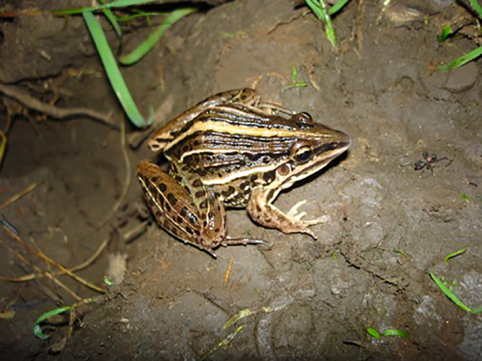

De tamanho médio, possui seis pregas salientes nas costas que são castanho,esverdeadas ou amareladas. Pernas, costas e cabeça são coberto por manchas escuras. Ocorre em todos os estados do Brasil. De tamanho médio e hábito terrestre, os machos vocalizam de dentro de brejos ou lagos. Os ovos são colocados em uma espuma, depositada em câmaras subterrâneas. A fêmea protege a desova e os girinos por algum tempo (cuidado parental), tentando afastar quem se aproxime. Alimentam-se de gafanhotos e grilos, principalmente, além de besouros, aranhas, cigarrinhas, formigas, moscas e mosquitos. Não possui veneno.
